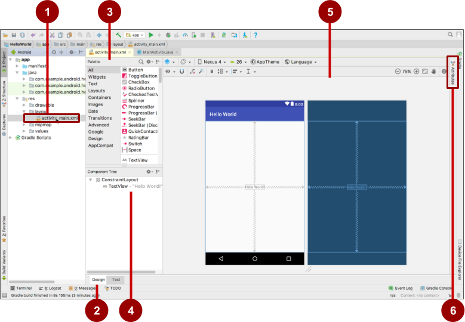

Grundlagen zur Android-Entwicklung mit Java und Android Studio
Abstract
Objectives
- Sie kennen die wesentlichen Bedienelemente des Layout Editors
- Sie können einfache Android Projekte mit Android Studio anlegen
- Sie können eine App auf einem physischen oder einem virtuellen Gerät deployen
- Sie können ein virtuelles Device anlegen
- Sie kennen die wesentlichen UI-Elemente in Android
The Layout Editor
Android Studio provides the layout editor for quickly building an app’s layout of user interface (UI) elements. It lets you drag elements to a visual design and blueprint view, position them in the layout, add constraints, and set attributes. Constraints determine the position of a UI element within the layout. A constraint represents a connection or alignment to another view, the parent layout, or an invisible guideline.
Explore the layout editor, and refer to the figure below as you follow the numbered steps:

-
In the
app --> res --> layoutfolder in theProject --> Androidpane, double-click theactivity_main.xmlfile to open it, if it is not already open. -
Click the Design tab if it is not already selected. You use the Design tab to manipulate elements and the layout, and the Text tab to edit the XML code for the layout.
-
The Palettes pane shows UI elements that you can use in your app’s layout.
-
The Component Tree pane shows the view hierarchy of UI elements. View elements are organized into a tree hierarchy of parents and children, in which a child inherits the attributes of its parent. In the figure above, the
TextViewis a child of theConstraintLayout. -
The design and blueprint panes of the layout editor showing the UI elements in the layout. In the figure above, the layout shows only one element: a
TextViewthat displays"Hello World". -
The Attributes tab displays the Attributes pane for setting properties for a UI element.
Create and Manage Virtual Devices
Use the Android Virtual Device (AVD) manager to create a virtual device (also known as an emulator) that simulates the configuration for a particular type of Android device, and use that virtual device to run an app.
Using the AVD Manager, you define the
- hardware characteristics of a device,
- its API level,
- storage,
- skin,
- and other properties
and save it as a virtual device.
With virtual devices, you can test apps on different device configurations (such as tablets and phones) with different API levels, without having to use physical devices.
An Android Virtual Device (AVD) is a configuration that defines the characteristics of an Android phone, tablet, Wear OS, or Android TV device that you want to simulate in the Android Emulator. The AVD Manager is an interface you can launch from Android Studio that helps you create and manage AVDs.
The AVD Manager can be opend using Tools > AVD Manager or by clicking on the AVD Manager icon in the toolbar.
Deploy an App on a Physical Device
In order to deploy an App on a physical device, you must turn on USB Debugging on your Android device. This is enabled in the Developer options settings of your device.
On Android 4.2 and higher, the Developer options screen is hidden by default.
To show developer options and enable USB Debugging:
- On your device, open
Settings, search forAbout phone, click onAbout phone, and tapBuild numberseven times. - Return to the previous screen (Settings / System).
Developer optionsappears in the list. TapDeveloper options. - Choose
USB Debugging. - Now you can connect your device and run the app from Android Studio.
- Connect your device to your development machine with a USB cable.
- Click the
Runbutton in the toolbar. TheSelect Deployment Targetwindow opens with the list of available emulators and connected devices. - Select your device, and click
OK.
Android Studio installs and runs the app on your device.
UIs in Android
The user interface (UI) that appears on a screen of an Android device consists of a hierarchy of objects called views — every element of the screen is a View. The View class represents the basic building block for all UI components, and the base class for classes that provide interactive UI components such as buttons, checkboxes, and text entry fields.
Commonly used View subclasses are:
TextViewfor displaying text.EditTextto enable the user to enter and edit text.Buttonand other clickable elements (such as RadioButton, CheckBox, and Spinner) to provide interactive behavior.ScrollViewandRecyclerViewto display scrollable items.ImageViewfor displaying images.ConstraintLayoutandLinearLayoutfor containing other View elements and positioning them.
The Java code that displays and drives the UI is contained in a class that extends Activity. An Activity is usually associated with a layout of UI views defined as an XML (eXtended Markup Language) file. This XML file is usually named after its Activity and defines the layout of View elements on the screen.
Example
For example, the MainActivity code in the Hello World app displays a layout defined in the activity_main.xml layout file.
Marshalling und Unmarshalling
Marshalling refers to the process of converting the data or the objects inbto a byte-stream, and unmarshalling is the reverse process of converting the byte-stream beack to their original data or object. The conversion is achieved through serialization.
The purpose of the marshalling/unmarshalling process is to transfer data between remote systems or system components (eg. classes or activities).
Note
Definition: Unmarshalling or unmarshaling refers to the process of transforming a representation of an object that was used for storage or transmission to a representation of the object that is executable. A serialized object which was used for communication can not be processed by a computer program. An unmarshalling interface takes the serialized object and transforms it into an executable form. Unmarshalling (similar to deserialization) is the reverse process of marshalling.
Other Tipps
Integrating External Resources
Integrate images into your android project using the newly introduced resource manager (→ see https://stackoverflow.com/a/57330638).